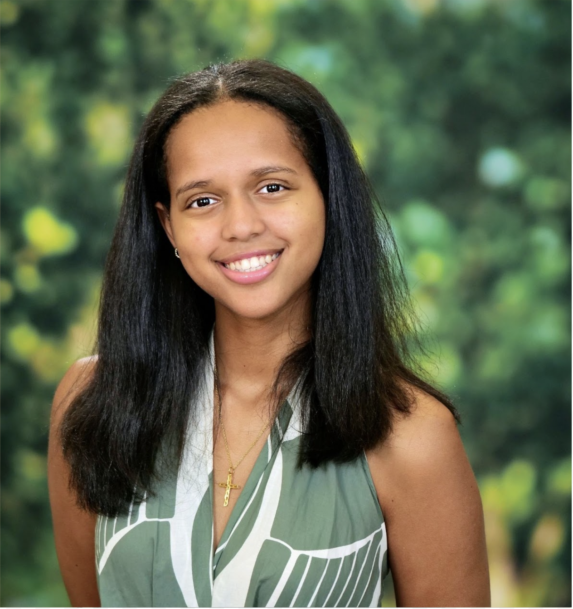
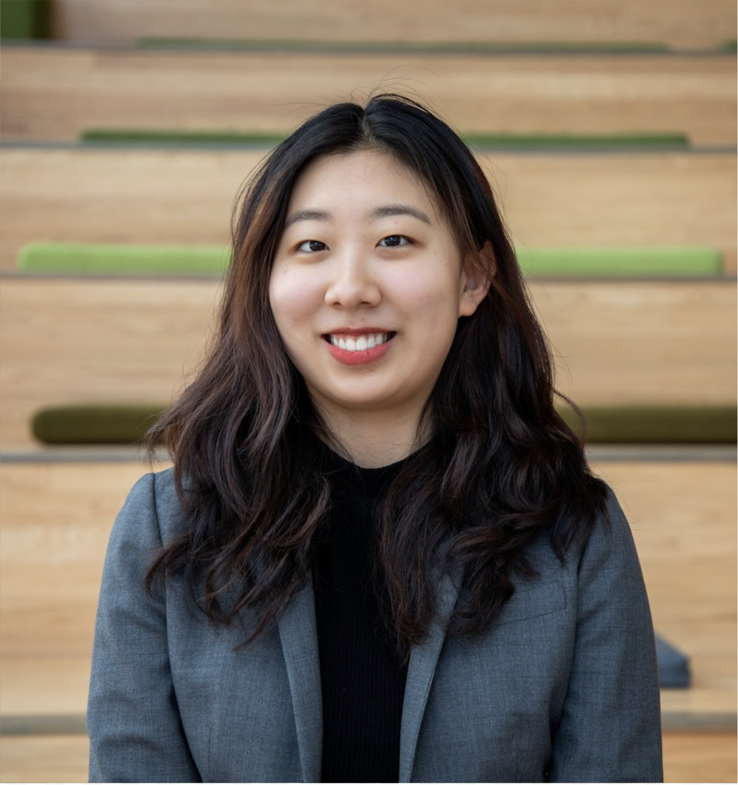
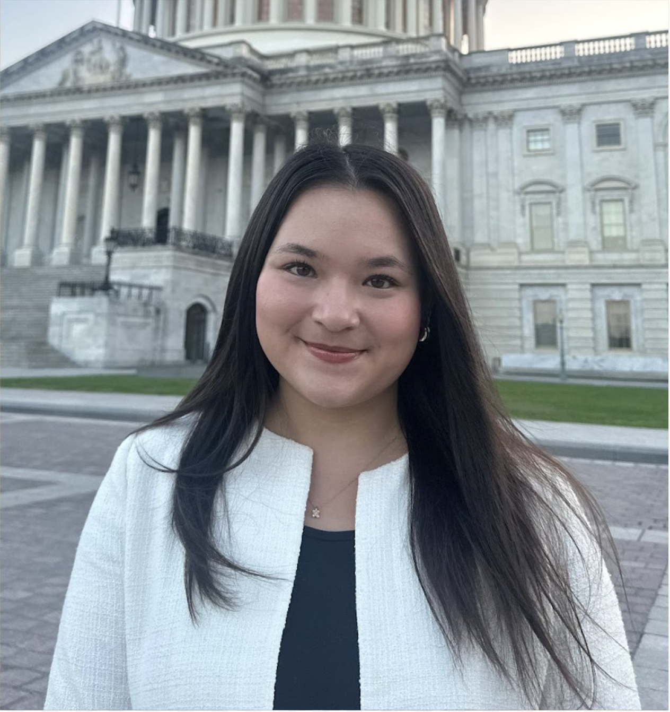
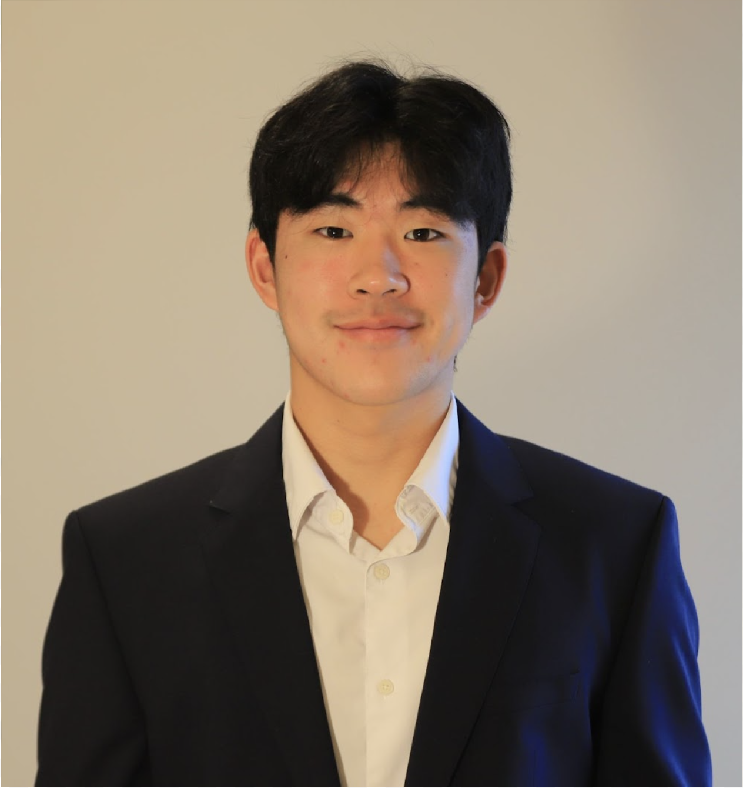
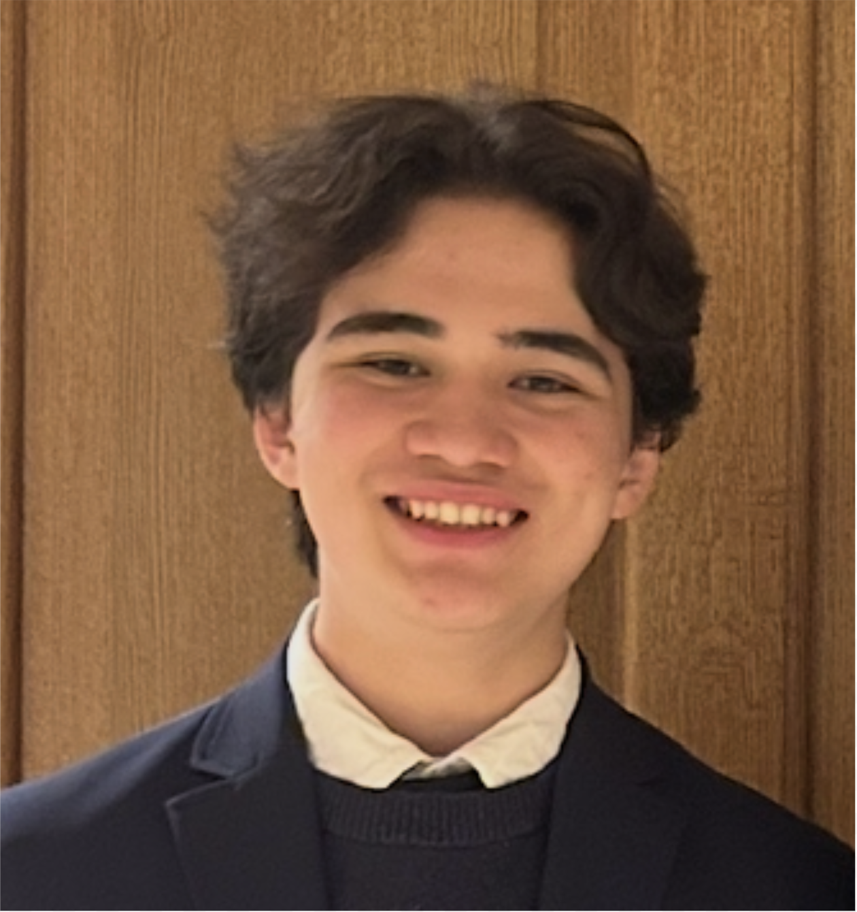
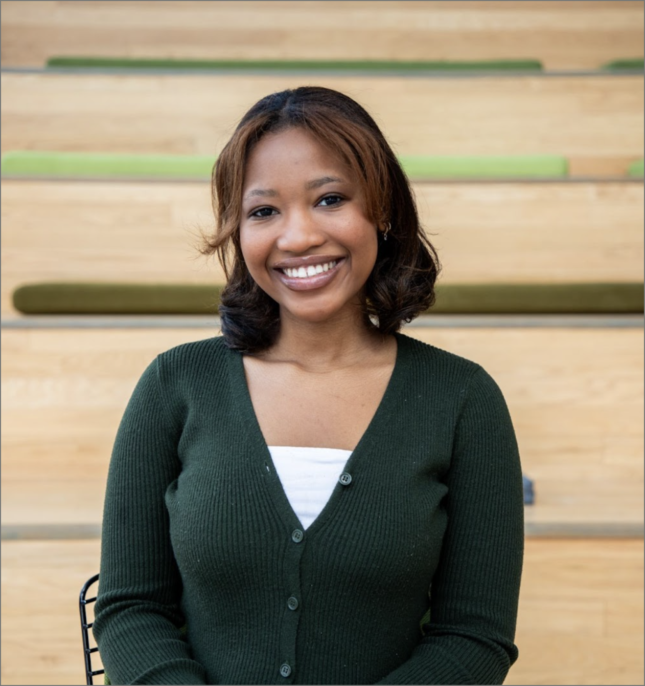

Board

Abigail is a sophomore double-majoring in Government and Legal Studies and Africana Studies. She is interested in International Law and Corporate Law. She enjoys exploring different areas of law and studying European and African politics. As part of the Bowdoin Pre-Law Society, she hopes to assist students like herself who are undecided about what type of law they want to pursue. She is excited to host panels with alumni and present on different practices! Ultimately, Abigail's goal in law is to help people understand and navigate the complex legal system.

Bobin is a sophomore at Bowdoin College, double-majoring in Government and Latin American Studies. She plans to pursue a career in civil rights or immigration law. Bobin and Abi founded PLS in 2026 in hopes of creating a community for pre-law students at Bowdoin to connect, regardless of their academic interests or background, and explore the many fields in law. She is Btirrlooking forward to creating a welcoming environment at Bowdoin for students to learn about legal professions.

Hi! I’m Brittany and I’m a member of the class of 2027. I’m double majoring in Government & Legal Studies and History, with a minor in Philosophy. I’m interested in learning more about law as it relates to the U.S. judicial system and intersections between law and policy. I am super excited to help increase membership in the club and to create a space where students with similar interests can work together to network, learn, and prepare for their professional futures!

Zion is a sophomore majoring in Government and Legal Studies with a minor in Philosophy. He is interested in Constitutional Law and the role of the judiciary. Through PLS, he hopes to help establish a platform that fosters rigorous, thoughtful engagement and builds a community of students who are passionate about current legal issues.

James Stuber is a Sophomore majoring in History and Government & Legal Studies and minoring in Chinese. Outside of class, he is involved with the Korean Student Association, the Chinese department, and the Volunteer Lawyers Project. He is interested in transnational immigration law. He is excited to expand the Pre-law Society in its inaugural year and educate more people about the different career paths available in the field of law. Through the Bowdoin Law Review, he hopes to make legal writing more accessible and encourage peers to engage with legal writing.

Emilie is a sophomore majoring in Government and Legal Studies and English. She is interested in health law and public health, and hopes to pursue a government career in this field. In being a part of Bowdoin’s Pre-Law Society, she hopes to create a strong and diverse network of students passionate about law from across all disciplines of Bowdoin.